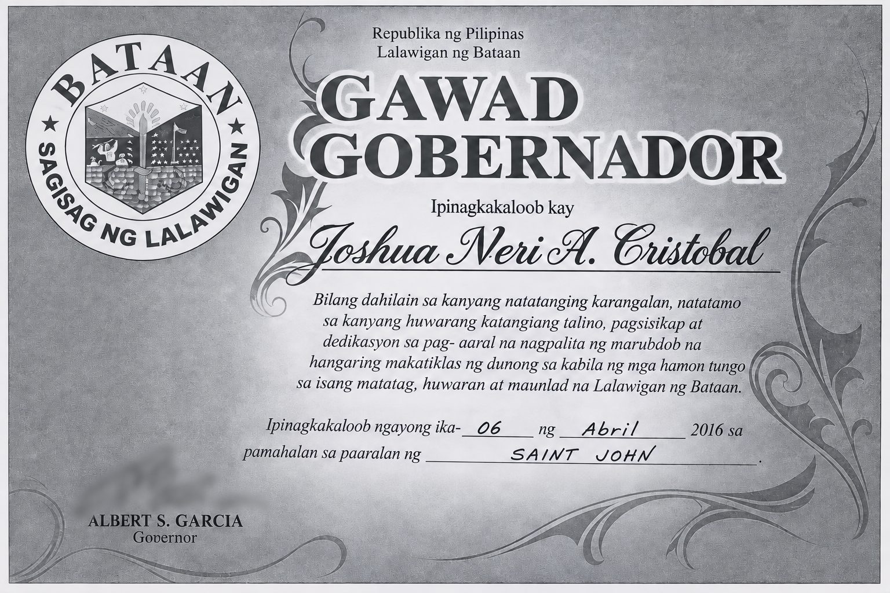
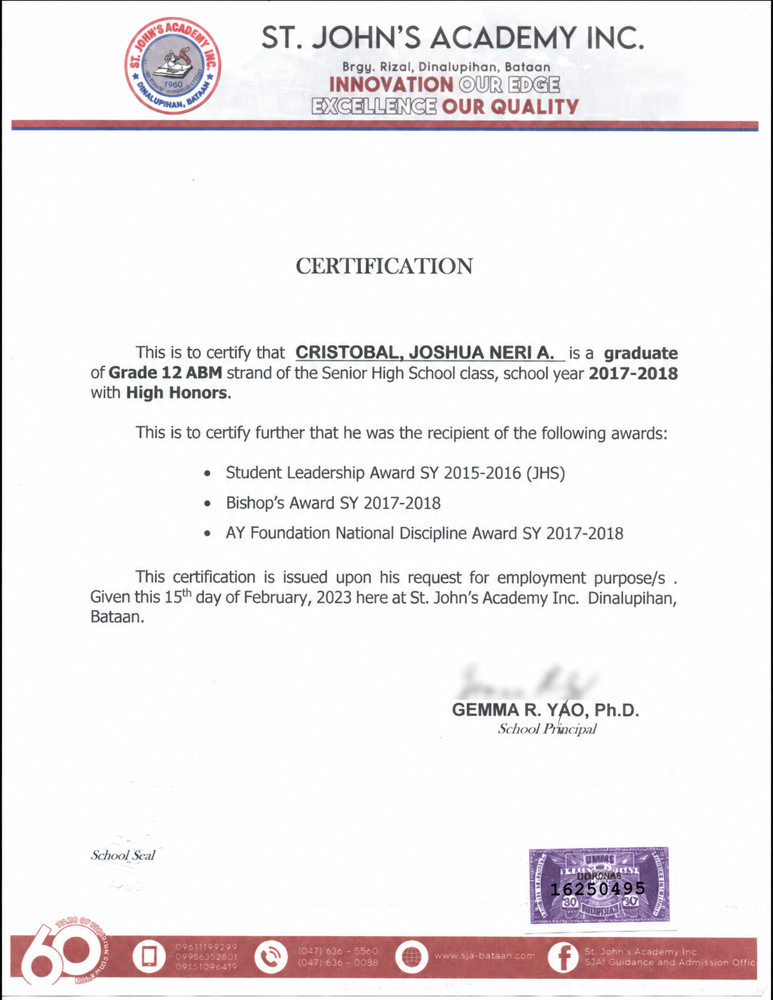

Difference
What happens when leadership is judged against expectations about who looks, sounds, or behaves like a leader?
Resistance · Recognition Through Service · Case
A case about challenging standards, being doubted, and learning that leadership is sometimes tested most clearly when other people have already decided what you are supposed to be.
Records: 2016 · 2018 · 2023
Why this case matters
I have always been critical of standards that are treated as unquestionable simply because they are familiar. That instinct became personal early. In junior high school, I was doubted as someone who could lead a student council because I was seen as "different" within the standards of a Catholic-school environment.
I did not experience that difference as a weakness. I saw it as one more reason to lead on my own terms.
What happens when leadership is judged against expectations about who looks, sounds, or behaves like a leader?
How do you keep acting with purpose when institutions, norms, or influential people are not neutral toward you?
What does self-belief look like when affirmation arrives late, inconsistently, or not at all?
When acknowledgment finally comes, what does it reveal about the standards a community is willing to reconsider?
2016
In junior high school, leadership became a test of more than competence. I was running for student council in an environment where I understood that some people questioned whether someone like me could represent the student body because I did not fit comfortably inside their idea of what was acceptable or conventional.
That experience sharpened something I already carried: I was willing to question the standard itself. If leadership meant responsibility, service, communication, and the trust of people you hoped to represent, then those should be the measures that mattered.
History repeats
Years later, I faced another student-election environment where I experienced what felt like coordinated opposition from some teachers, who supported another candidate. That candidate happened to be a friend I had known since elementary school.
The tension was not personal between us. What stayed with me was the larger question: what happens when institutions that are supposed to help young people discover their capacity begin signaling who they believe should or should not lead?
I could not control those judgments. I could control whether I allowed them to become my own.
The final test
The arc came full circle when I was nominated for the AY Foundation award. By then, I had already learned not to treat recognition as proof of worth. I knew what I had contributed, what I had endured, and what kind of leader I had tried to become.
I was still surprised when I received the Bishop's Award.
For a moment, all the earlier doubt became part of a much larger story. The people and standards that once made leadership feel like something I had to justify did not get the final word.
Reflection
Looking back, I think of David facing several Goliaths, with spectators watching to see which version of the story would survive. The scale was never equal. That did not mean the outcome had already been decided.
There was sweetness in the victory, but the more durable lesson was simpler: confidence did not arrive with the award. It had to exist before the recognition did.
Documentary record
These images preserve the visible moments. The case is about the longer path behind them.


Supporting records


What I carry forward
The most important part of this story is not that recognition eventually came. It is that I had already decided not to let other people's standards become the limit of my own imagination.
Recognition can be meaningful. It can correct a record, affirm contribution, and widen a community's idea of who belongs. But it should not become the source of confidence. By the time the award arrived, the deeper victory had already happened: I had continued to lead without waiting to be made acceptable first.
Community → Resistance
Explore Recognition Through Service for the broader questions around contribution, responsibility, trust, standards, and acknowledgment.
Recognition Through Service →